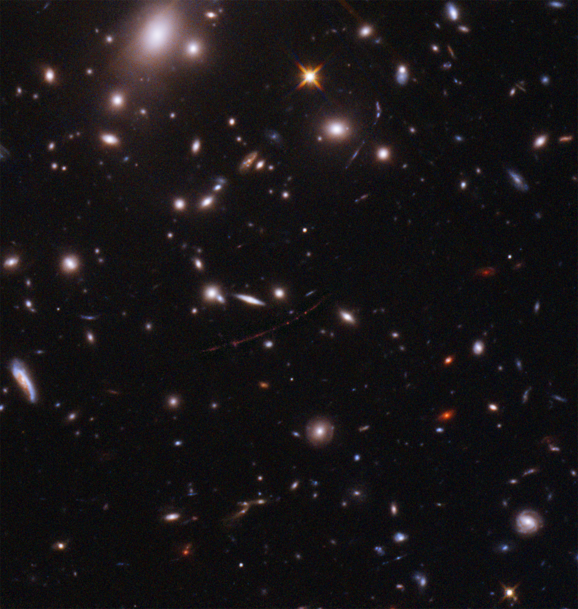

El Telescopio Espacial Hubble fue lanzado con el Transbordador Espacial el 24 de april de 1990. Es un telescopio muy especial que órbita la Tierra. Hubble nos permitió ver objetos más claramente porque se encuentra por encima de las nubes de la atmósfera terrestre.
El telescopio espacial Hubble de la NASA ha establecido un nuevo punto de referencia extraordinario: detectar la luz de una estrella que existió en los primeros mil millones de años después del nacimiento del universo en el Big Bang, lo que la convierte en la estrella individual más lejana jamás vista hasta la fecha.
